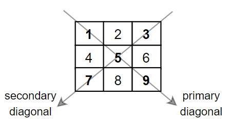

Projects
Dad Joke Robot Reviewer
- Tasked with using 2 different RESTful JSON APIs and to have them communciate with one another to create an application with JavaFX
- Wanted to create a wacky, whimsical project by grabbing a list of joke based on the user's search query
- Have the user select their favorite dad joke and review their sentiment to the joke on a scale of 1 for Bad - 10 for Good
- After giving their review, a robot will tell their review of the joke according to its calculation of what words were used to which the user can compare their response

TripAdvisor Mock App
- A Work-in-Development Project where me and my colleagues are planning to create an application similar to TripAdvisor
- It would provide details about transportation, cuisines, restaurants, tourist hotspots, and weather forecast
- Alongside with the behind-the-scene programming, this project is planned to have a user-focused interactive interface
- Focusing on the implementation and creative thinking about the app makes it paramount to ensure user-satisfaction is the #1 priority

Big Data and Diagonal Sums
- Using low-level system calls in C, I developed a program that can read a nXn matrix of whole number and locate diagonal sums of a specific value
- It can read and write to files as input and output. It takes large datasets and compute the diagonal sums in an efficient and timely manner
- The algorithm developed ensures that when a desired sum is exceeded or is met, it stops itself to prevent needless work.
- It also uses threading processes to divide the work among many threads while simultaneously working on different parts of the code improving runtime and simplicity